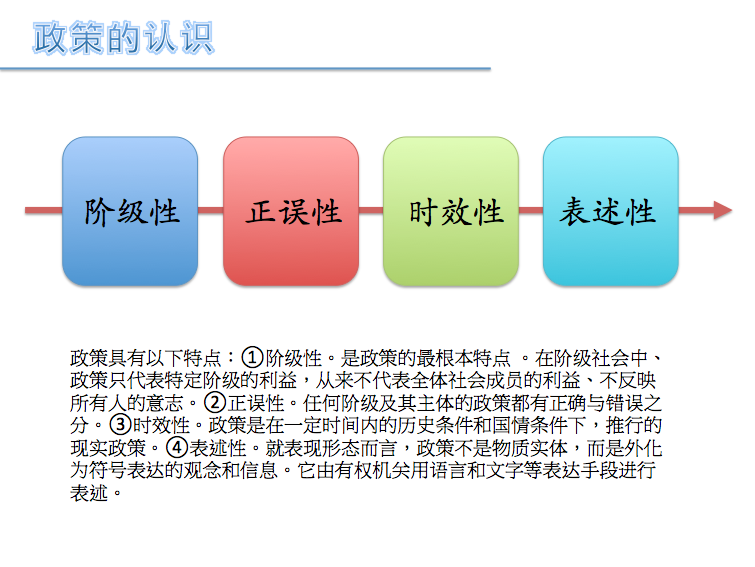
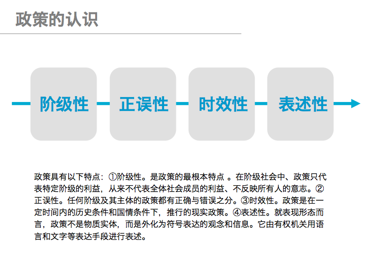

视觉复杂度越高，设计感就越需要专业的设计技能来实现，因此请尽可能地降低视觉复杂度。在PowerPoint的设计里面，有很多东西是增加视觉复杂度的，这里包括：
- 颜色-默认的PPT模版中有太多的颜色选择，当你对色彩搭配没有足够信心时，尝试尽可能少的使用颜色。
- 字体-PowerPoint因为中英文切换时候经常产生字体混乱的情况，尝试只选择一个系列的字体。
- 阴影-阴影什么的最讨厌了，注意PowerPoint默认图形就会阴影。
- 边框-没有必要的话，不需要使用边框，万不得已请选择统一规格的边框。
- 渐变-渐变是让PPT变得俗气的一大恶习，请不要使用。
- 艺术字-艺术字是让PPT变得俗气的二大恶习，请不要使用。
在下面这个例子中你可以比较当颜色、字体、阴影等一系列可能产生视觉复杂度的因素被去除时，信息表达会有什么样的不同。

消除视觉复杂度之后：

从上面的比较可以看出，尽可能少的使用增加视觉复杂度的元素，例如边框、阴影、渐变、多种颜色是提示PPT设计感的第一步。